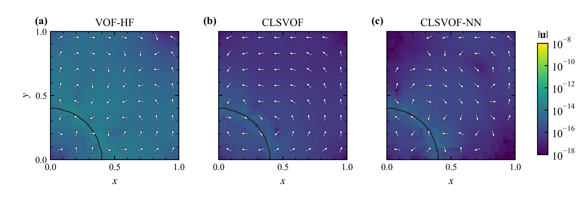
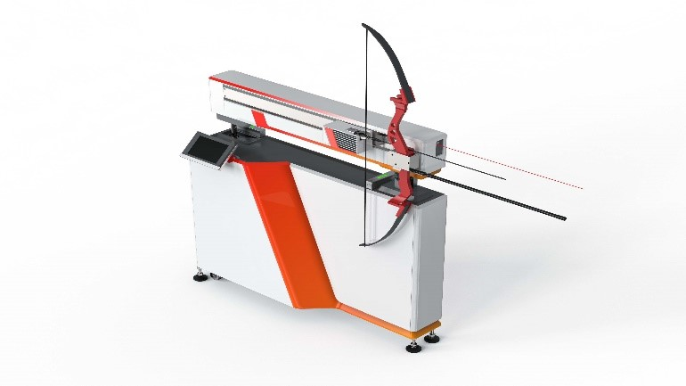
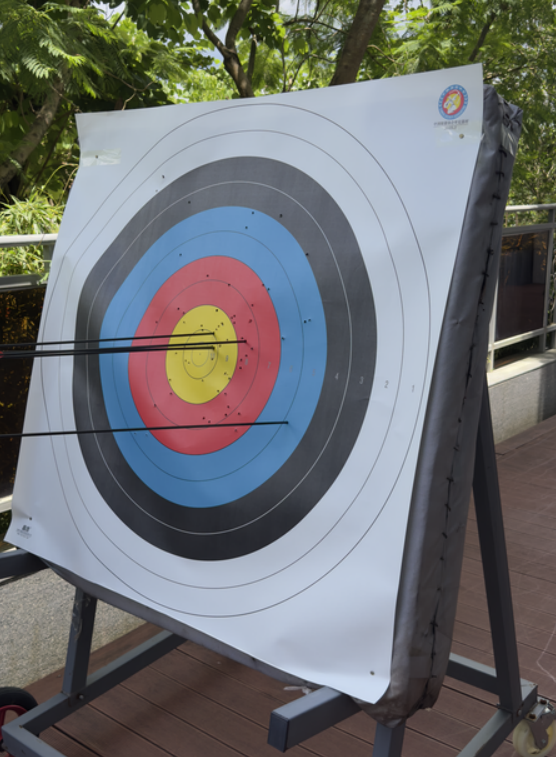
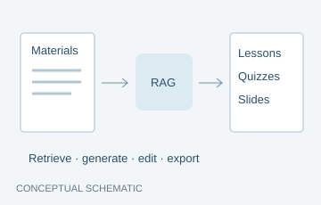

Neural Curvature Estimation for Two-Phase Flow Simulations
Supervisor: Dr. Jiaqi Zhang (BNBU)
Neural interface-curvature estimation for multiphase flow, connecting learned local geometry with numerical simulation in Basilisk.
I am a Year 4 Applied Mathematics undergraduate interested in applied machine learning and its applications across different domains. My work relates to numerical simulation, computer vision, sports analytics, and AI-assisted education.

Supervisor: Dr. Jiaqi Zhang (BNBU)
Neural interface-curvature estimation for multiphase flow, connecting learned local geometry with numerical simulation in Basilisk.

Project leads: Prof. Huaxiong Huang · Dr. Jiaqi Zhang (BNBU)
High-speed motion analysis and physical measurements for data-driven selection of competition-grade arrows. Research at BNBU’s digital sports research center, 2025–2026.

Supervisors: Dr. Lidong Fang (SUFE) · Prof. Huaxiong Huang (DKU)
A vision pipeline for detecting arrow impacts and recognizing ring scores under practical shooting conditions.

Supervisor: Dr. Jiaqi Zhang
A teaching-support system that turns course materials into editable lessons, assessments, and presentations through retrieval-augmented generation.